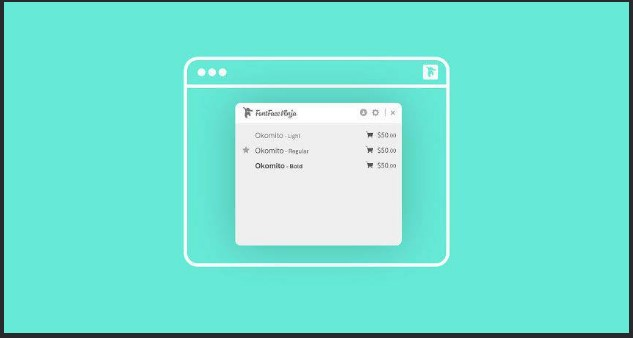

Achou a fonte de uma letra interessante? A partir de uma imagem, é possível descobrir a fonte que foi usada com a ajuda do site WhatTheFont. Ele compara a fonte com uma biblioteca de letras salvas e consegue identificar várias alternativas. Vamos ao tutorial.
Em primeiro lugar, acesse WhatTheFont no computador ou celular. É melhor para o reconhecimento se você escolher uma imagem que tenha letras bem espaçadas, legíveis, uma fonte uniforme e o texto seja o mais horizontal possível. Agora é só ir em Choose File, escolher a sua imagem e clicar em Continue.
Na próxima página, você terá que escrever as letras que aparecem na imagem manualmente, como mostra a captura abaixo:
Logo depois, o site vai fazer o reconhecimento e listar uma série de fontes que podem parecer com a sua:
A fonte da imagem, por exemplo, era da família de fontes do Ubuntu, mas a segunda letra que sugerida na imagem acima já é bem parecida. Imagino que também dificultou o fato de ter mais de uma fonte na imagem (uma em negrito e a outra regular). Quanto mais uniforme for a sua imagem, melhor para os resultados.
Baixando uma extensão de navegador disponível para Chrome e Safari e com um marcador. Tudo o que você precisa fazer é clicar nele e, em seguida, passar o mouse sobre o texto na página web e a extensão mostrará o nome da fonte.
Fontface Ninja é outra extensão do navegador para identificar fontes. O que diferencia este é a capacidade de experimentar as fontes com seu próprio texto e a capacidade de comprar imediatamente a fonte clicando no link de preços ou download. Funciona com Chrome, Safari e Firefox.
O FontSpring Matcherator permite que você carregue uma imagem ou compartilhe o link para a URL da imagem para identificar fontes que foram usadas. A ferramenta suporta recursos openType e ele ainda vem com um recurso de refinamento de tag para que você possa reduzir os resultados.
Identifont funciona um pouco diferente das outras ferramentas desta lista. Ele ajuda você a identificar fontes, fazendo uma série de perguntas sobre a fonte. Em seguida, ele lhe dá três partidas e uma lista de fontes semelhantes.
Se você sabe que a fonte que você está tentando identificar pertence à família Serif, esta ferramenta será útil. Ele é focado apenas em fontes serif e guia você através de várias perguntas que vão ajudá-lo a descobrir qual fonte serif foi usada.
A Tiff se comercializa como uma ferramenta diferencial de fonte que permite reduzir suas opções de fonte. Use a ferramenta para destacar visualmente as diferenças entre duas fontes para que você possa escolher a melhor fonte para o seu projeto.
Às vezes, você está familiarizado com a fonte que foi usada, mas não pode identificá-la com absoluta certeza. TypeTester pode ser útil, pois a ferramenta permite comparar 3 tipos de uma só vez para que você possa reduzir suas escolhas.